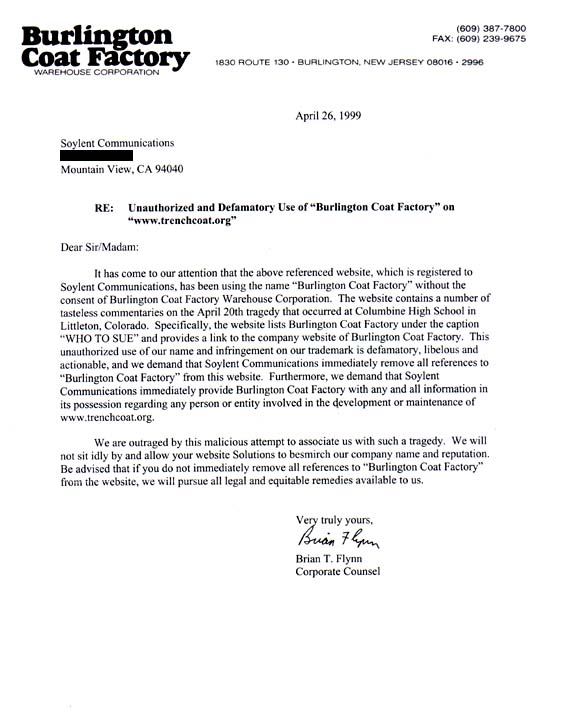

cease & desist letter #3 - trenchcoat.org
An archive of disturbing illustration
Part I. Cause
We registered trenchcoat.org, put up admittedly one of
the most timely offensive things that has ever been privilege to
be hosted on the internet. Under "WHO TO SUE" was listed both
rotten.com and Burlington Coat Factory, an outlet store. You can
buy trenchcoats there, the implication of course being that
somehow the Columbine School Massacre was planned and/or instigated
by Burlington Coat. Yeah. Right.

Part II. Conclusion
They were most upset. They called our former ISP a number of times,
and sent us this lovely demand. By then of course, the number of
death threats we had received piled up to a sufficiently interesting
level that the site content was ready to change to its new
"all hate mail" format.
[return to rotten.com]
|